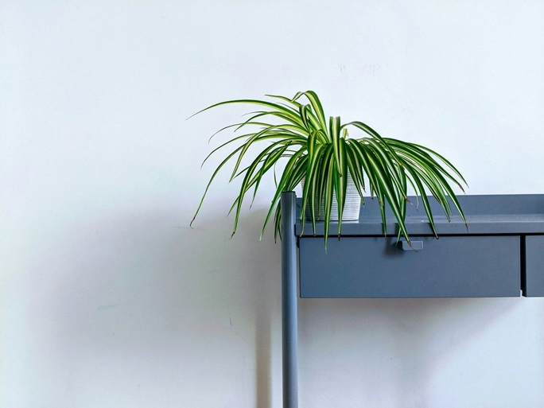
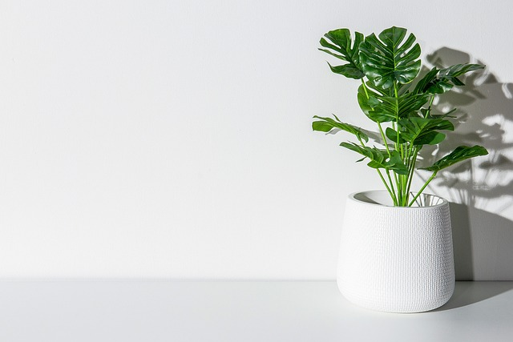
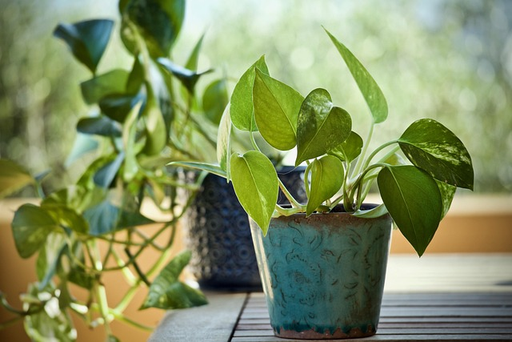
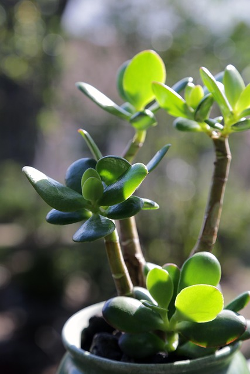
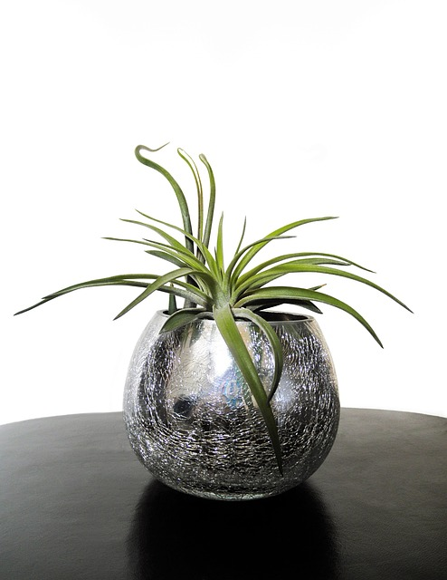
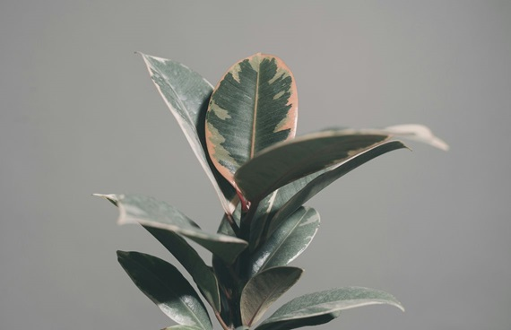
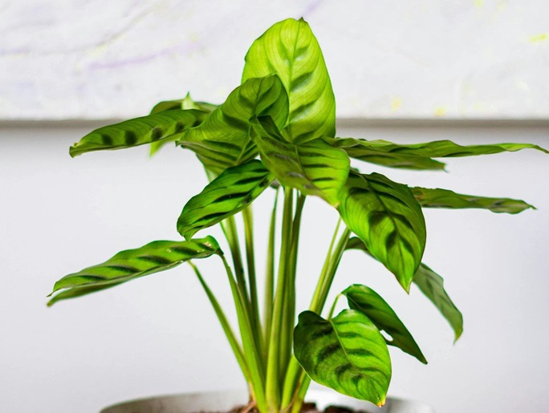
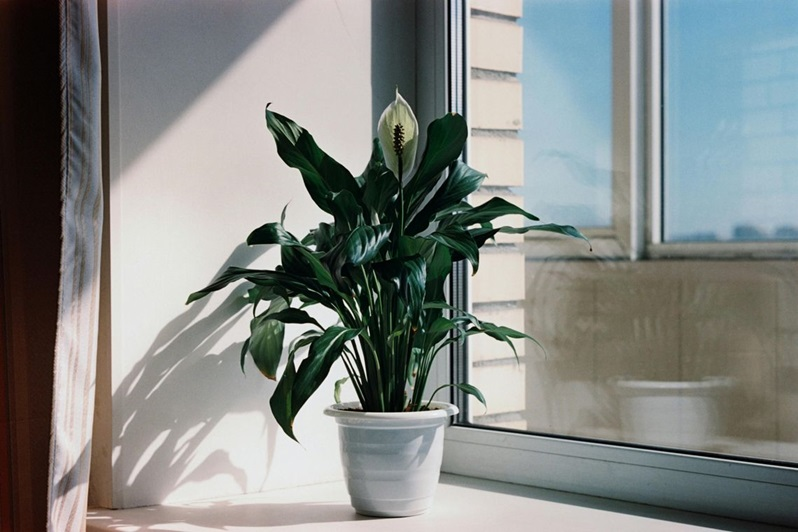
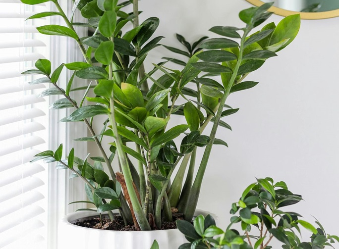

Known for thriving on neglect, the snake plant is a popular choice for beginning botanists. It requires minimal care, tolerates low light conditions and infrequent watering, making it ideal for busy homeowners. Depending on the variety, the leaves can be green, white/green, or yellow/green. For best results, snake plants should be cared for in bright, indirect light. Water only when the soil is completely dry. Overwatering can lead to root rot. Reduct watering further in the winter months as snake plants become dormant. As for soil, use a well-drainging potting mix such as the ones designed for succulents. Snake plants can tolerate low light and low humidity conditions as well as infrequent watering, so it makes for a great first plant!

Spider Plant
This easy-to-grow plant features cascading green and white leaves. Long arching stems develop with small plants that have a spider-like appearance. It adapts to various light conditions, from bright indirect light to shade, and prefers humid environments.

Monstera Plant
Also known as the Swiss cheese plant, the monstera is prized for its large, heart-shaped leaves with unique gaps and splits. It comes in various variegated options and thrives in moderate light with well-drained soil. Monstera was featured in many Matisse paintings and has continued its popularity over the decades.

Pothos Plant
This has been a popular house plant for decades. It is one of the most durable of all houseplants requiring minimal care. It is a great houseplant for beginners. The pothos is known for its trailing vines that can climb or cascade. The leaves are heart-shaped and can be green or variegated with white or yellow. It requires minimal care, preferring low light and well-drained soil.

Jade Plant
A popular succulent, the jade plant has thick, oval leaves and a shrub-like appearance. It requires minimal watering and thrives in bright, direct sunlight. This has been a popular houseplant for over 60 years. Because it is a succulent, it requires very little care to be a very successful houseplant.

Air Plant
These unique plants have no roots and absorb moisture from the air. Air plants come in various shapes, sizes, and colors and thrive in bright, indirect light with high humidity, like bathrooms or indoor pools. They don’t need traditional watering but will benefit from occasional misting once a week, or can be completely immersed in water for a few minutes to absorb water.

Rubber Plant
A classic houseplant, the rubber plant features large, glossy, leathery leaves and can grow quite tall. It adapts to varying light conditions, making it a versatile choice for any room. This old-fashioned houseplant has stood the test of time. It also makes a great architectural statement in the home.

Zebra Plant
Known for their decorative foliage with intricate patterns, prayer plants come in a wide variety. They prefer indirect light, high humidity, and well-drained soil rich in organic matter.

Peace Lily
This elegant plant features white flowers amidst dark green foliage. It prefers indirect light and thrives in moist, well-drained soil. The peace lily has been especially popular in office buildings and malls, but increasingly has become a stalwart houseplant due to its durability. It needs indirect to low light conditions, and should dry out completely between waterings.

ZZ Plant
The ZZ plant has gained popularity in recent years due to its low-maintenance requirements. It is a clump-forming house plant with upright stems with many attractive, glossy leaves. ‘Black Raven’ ZZ plant is one of the black-foliaged cultivars that is highly coveted. It tolerates a wide range of light conditions, from bright sun to shade.